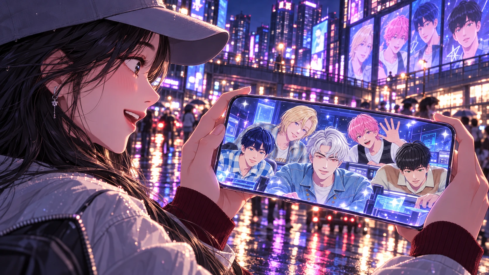
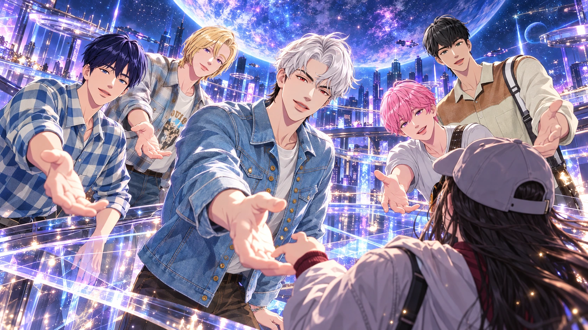
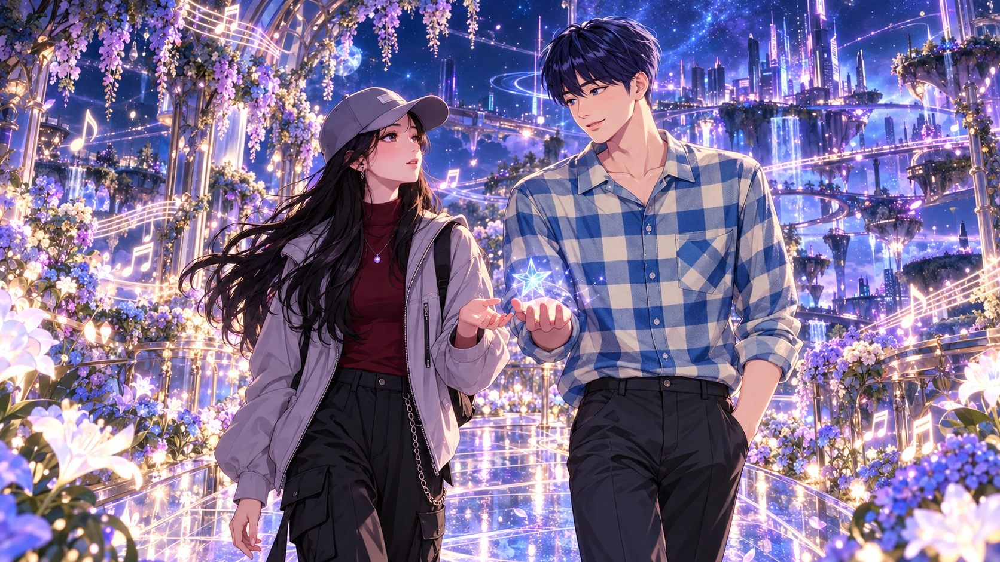
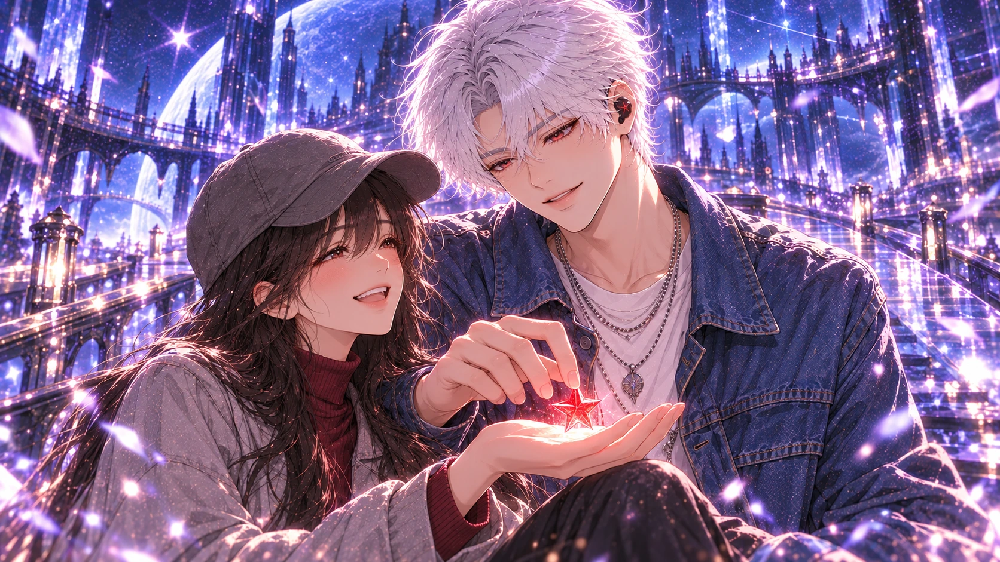
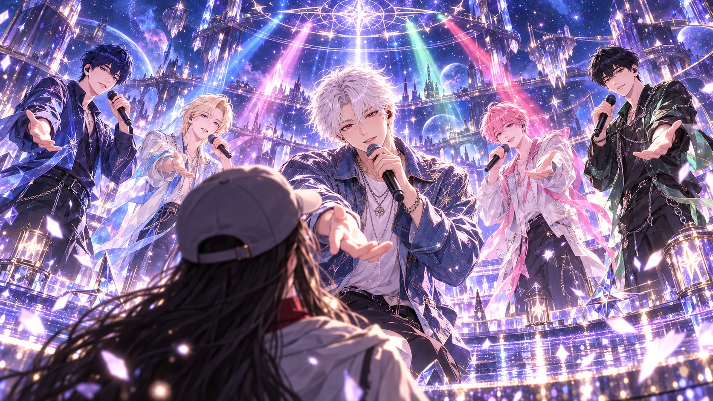
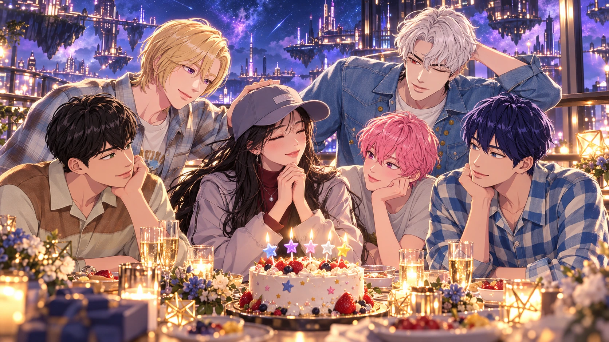
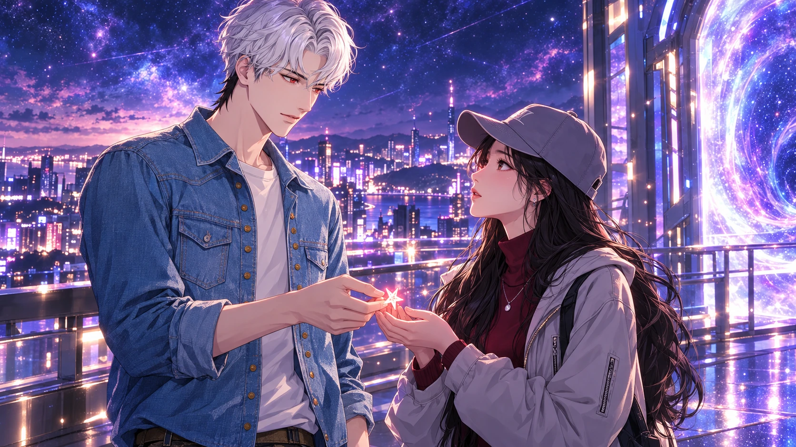

序章｜平凡的十月二十日
十月的夜晚，城市依舊喧鬧。
街道上的霓虹燈映照著來往的車輛，商店播放著熟悉的流行音樂，人群匆匆走過，彷彿每個人都有自己的目的地。
在這座城市裡，有一個女孩，名叫 YiTing。
她戴著灰色棒球帽，長長的黑髮隨著晚風輕輕擺動。身上穿著酒紅色高領上衣與淺灰色外套，搭配深色工裝褲。
今天是十月二十日。
也是她的生日。
1995 年的這一天，她來到了這個世界。
但對現在的她而言，生日似乎已經不再像小時候那樣令人期待。
長大以後，生活總是有許多需要忙碌的事情。有些願望還沒有實現，有些期待逐漸被日常取代。
她並不是不快樂，只是偶爾會希望，在平凡的日子裡，也能發生一點特別的事情。
走到十字路口時，YiTing 停下腳步，拿起手機。
耳機裡正播放著她最喜歡的團體——PLAVE 的歌曲。
熟悉的旋律讓她露出淡淡的笑容。
五個來自另一個世界的男孩，總能在她疲憊的時候帶來力量。
尤其是銀虎。
那個有著明亮眼神、帶著一點調皮，又總是在重要時刻展現溫柔的男孩。
她看著手機裡的銀虎，忍不住輕聲說：
「如果今天真的能見到你們就好了。」
她笑了笑，覺得自己有點傻。
畢竟，那是不可能的事情。
至少，她一直都是這麼認為的。

第一章｜來自另一個世界的訊息
晚上十點十九分。
YiTing 正準備收起手機，螢幕卻突然閃爍了一下。
原本播放的音樂停了。
接著，畫面變成一片深藍色。
無數細小的光點緩緩聚集，像是有人將整片星空裝進手機裡。
畫面中央，出現了一行文字。
「YiTing。」
她愣了一下。
「咦？」
下一秒，第二行文字浮現。
「今天，是妳的生日吧？」
YiTing 皺起眉頭，試著關閉畫面。
但無論她怎麼操作，螢幕上的星光都沒有消失。
緊接著，一個熟悉的聲音傳了出來。
「喂喂，這樣真的傳得過去嗎？」
是斑比的聲音。
另一個聲音接著回答：
「你不要一直碰那個按鈕啦！」
是河玟。
「可是我想確認她有沒有收到啊！」
斑比不服氣地說。
YiTing 睜大眼睛。
她不敢相信自己聽見了什麼。
突然，手機畫面亮起。
畫面裡是一間充滿藍紫色光芒的房間。
藝俊正站在一個發光的控制台前。
諾亞靠在一旁，帶著從容的笑容。
斑比興奮地湊近鏡頭。
河玟則低頭確認儀器上的數據。
而房間的另一端，還有一個熟悉的身影。
銀虎。
「訊號接上了！」
河玟突然說道。
藝俊立刻抬起頭。
「真的嗎？」
斑比興奮地揮手。
「YiTing！聽得到嗎？」
YiTing 完全說不出話。
她甚至懷疑自己是不是太累，開始做夢了。
諾亞看著鏡頭，笑著說：
「看她的表情，應該是聽到了。」
這時，一直站在後方的銀虎終於走向鏡頭。
他微微彎下身，像是在確認畫面另一端的人。
「YiTing？」
她的心跳突然加快。
銀虎露出笑容。
「終於找到妳了。」
第二章｜十點二十分的奇蹟
手機上的時間跳到了晚上十點二十分。
就在數字改變的瞬間，周圍的世界突然安靜下來。
街道上的車輛停止移動。
半空中飄落的樹葉停在原地。
甚至連遠處的紅綠燈，都像被按下暫停鍵。
YiTing 驚訝地環顧四周。
「這是……怎麼回事？」
手機裡，銀虎的聲音再次響起。
「別害怕。」
「我們只是借用了一點點時間。」
藝俊在後方補充：
「準確來說，是暫時建立了 Terra 和 ASTERUM 之間的連結。」
斑比立刻說：
「你這樣講她怎麼可能聽得懂啦！」
諾亞笑了出來。
河玟無奈地搖搖頭。
銀虎看著鏡頭，直接說：
「簡單來說……」
他停頓了一下。
「我們想邀請妳，來我們的世界。」
YiTing 呆呆地望著手機。
「我？」
「對，就是妳。」
「可是……為什麼？」
銀虎沒有立刻回答。
只是露出有點神祕的笑容。
「因為今天，有一件很重要的事情。」
話音剛落，街角的大型電子螢幕突然亮起。
原本播放的廣告消失，取而代之的是一片浩瀚的星空。
星光從螢幕裡緩緩溢出，化作無數細小的光點，漂浮在 YiTing 身旁。
她忍不住伸出手。
一顆光點停在她的指尖。
那一瞬間，她聽見銀虎的聲音。
「準備好了嗎？」
YiTing 看向螢幕。
銀虎正站在星光的另一端，朝她伸出手。
「這次，換我們來接妳。」
YiTing 深吸一口氣。
然後，緩緩伸出了自己的手。
當兩人的指尖碰觸到光芒的瞬間——
整個世界化作耀眼的白色。

第三章｜歡迎來到 ASTERUM
當 YiTing 再次睜開眼睛時，眼前的景色已經完全改變。
她站在一座漂浮於星海之上的平台。
天空呈現夢幻的藍紫色。
遠處是一座閃爍著光芒的城市，無數發光的星塵緩緩飄過。
腳下的地面像透明的玻璃，映照著浩瀚的宇宙。
她抬起頭。
一顆巨大的星球懸掛在天際。
「這裡是……」
「ASTERUM。」
熟悉的聲音從身後傳來。
YiTing 轉過身。
銀虎就站在那裡。
不是手機畫面。
不是舞台影像。
而是真正站在她面前。
她一時間忘了說話。
銀虎歪了歪頭。
「怎麼了？」
「……真的是你？」
銀虎笑了。
「不然呢？妳以為是誰？」
YiTing 忍不住笑出聲。
那種熟悉的語氣，讓原本不可思議的事情突然變得真實。
銀虎向她伸出手。
「歡迎來到我們的世界。」
她輕輕握住他的手。
這時，身後突然傳來一陣歡呼。
「成功了——！」
斑比從遠處跑了過來。
河玟緊跟在後面，試圖叫他慢一點。
藝俊和諾亞也朝他們走來。
藝俊溫柔地笑著。
「YiTing，歡迎妳。」
諾亞看著銀虎，故意說：
「有人從剛剛開始，就一直在等妳喔。」
銀虎立刻轉頭。
「哥！」
斑比馬上接話：
「對啊！他剛才還一直問我們，傳送門什麼時候才會成功！」
「呀！不要亂講！」
銀虎急忙反駁。
大家笑成一團。
YiTing 站在他們中間，也跟著笑了。
她從來沒有想過，自己有一天竟然能站在 PLAVE 五個人身旁。
而且不是隔著螢幕。

第四章｜五個人的祕密任務
藝俊告訴 YiTing，今晚的 ASTERUM 有一場特別的活動。
但活動開始之前，他們還需要完成最後的準備。
「所以，可以請妳幫我們一個忙嗎？」
YiTing 有些疑惑。
「我可以幫什麼？」
藝俊笑著說：
「幫我們找回五顆星星。」
原來，今晚舞台的核心裝置，需要五顆不同顏色的星光才能啟動。
這些星光分散在 ASTERUM 的不同角落。
於是，五個人決定帶著 YiTing，一起完成這趟小小的旅程。
第一站，是一座漂浮在空中的音樂花園。
藝俊帶著她走過一條發光的步道。
四周的花朵會隨著音樂輕輕搖擺。
他伸出手，一顆藍色星光緩緩浮現。
「這一顆，代表希望。」
藝俊看著 YiTing。
「希望妳不管走到哪裡，都能記得自己最初喜歡的事情。」
第二站，是一座被月光照亮的玻璃溫室。
諾亞站在盛開的花朵之間，伸手接住一顆紫色星光。
「這一顆，代表溫柔。」
他微笑著說：
「有時候，妳也可以不用那麼努力。」
「累的時候，就好好休息吧。」
第三站，是一片會隨著腳步改變顏色的廣場。
斑比興奮地拉著 YiTing 跑向中央。
「快快快！這裡超好玩的！」
他在地面上跳了幾步。
光芒跟著他的動作變成粉紅色。
YiTing 忍不住跟著跳起來。
兩個人笑得停不下來。
一顆粉紅色星光從地面升起。
斑比把它交給她。
「這一顆代表快樂！」
「以後也要像剛剛那樣，多笑一點！」
第四站，是一座能看見整片星海的觀景台。
河玟站在欄杆旁，安靜地望著遠方。
YiTing 走到他身旁。
河玟指著天空中一顆微弱的星星。
「妳看那裡。」
「雖然它很小，但還是一直在發光。」
他伸出手，讓一顆綠色星光落在掌心。
「這一顆，代表勇氣。」
「就算現在還看不見終點，也沒關係。」
「只要繼續往前走就好了。」
最後，YiTing 手裡已經有了四顆星光。
但還差一顆。
她轉過身。
銀虎正站在不遠處，雙手插在口袋裡，安靜地等著她。
「最後一顆呢？」
她問。
銀虎笑了笑。
「跟我來。」

第五章｜銀虎的星星
銀虎帶著 YiTing 走上一條安靜的星光步道。
這裡沒有熱鬧的音樂。
也沒有其他人的笑聲。
只有柔和的夜風，與遠處緩緩流動的星河。
兩個人並肩走著。
YiTing 看向銀虎。
「所以，你的星星在哪裡？」
「不急。」
「可是大家不是還在等嗎？」
「他們會等的。」
銀虎回答得很自然。
YiTing 忍不住笑了。
「你怎麼這麼有自信？」
銀虎轉過頭。
「因為我有很重要的事情要做。」
他們來到步道盡頭。
眼前是一片寬闊的星海。
銀虎停下腳步。
「YiTing。」
「嗯？」
「妳知道嗎？」
他抬頭望向天空。
「有時候，我們也會想，自己的聲音究竟能傳到多遠。」
YiTing 靜靜聽著。
「隔著螢幕、隔著不同的世界……」
「我們其實看不到每個正在聽歌的人。」
他停頓了一下。
「可是，只要想到有人因為我們的音樂而笑了，或者在難過的時候得到一點力量……」
銀虎轉頭看向她。
「就會覺得，做這些事情真的很值得。」
YiTing 低下頭，看著手裡的四顆星光。
銀虎繼續說：
「所以今天，我也想把一點力量送給妳。」
他伸出手。
掌心裡浮現一顆溫暖的紅色星光。
「這一顆，代表陪伴。」
「不管未來有多少不開心的日子，或者有多少還沒實現的願望……」
銀虎輕輕將星光放進她的手心。
「希望妳都不要忘記，自己也是很重要的人。」
YiTing 看著掌心裡的五顆星星。
眼眶微微發熱。
「謝謝你……銀虎。」
銀虎笑了。
「現在說謝謝還太早了。」
「咦？」
「因為真正的驚喜，還沒開始。」

第六章｜只為妳亮起的舞台
當 YiTing 和銀虎回到城市中央時，周圍突然變得一片漆黑。
她愣住。
「停電了？」
銀虎沒有回答。
只是站在她身旁，微笑著望向前方。
下一秒。
一道藍色光束劃破黑暗。
接著是紫色、粉紅色、綠色，以及紅色。
五道光芒在天空交會，化作一座巨大的星光舞台。
整座城市開始亮起。
遠方的建築、漂浮的道路、星海中的光點，都隨著音樂逐漸閃爍。
舞台中央出現五個熟悉的身影。
藝俊。
諾亞。
斑比。
河玟。
以及剛剛還站在她身旁的銀虎。
YiTing 驚訝地回頭。
才發現銀虎已經站上舞台。
藝俊拿起麥克風。
「YiTing。」
「謝謝妳來到我們的世界。」
諾亞接著說：
「今晚有一份特別的禮物。」
斑比興奮地揮手。
「而且是我們五個人一起準備的！」
河玟笑著補充：
「希望妳會喜歡。」
最後，銀虎走到舞台前方。
燈光緩緩落在他身上。
他望向台下唯一的觀眾。
「YiTing。」
「今天是十月二十日。」
「也是這個世界上，多了一個妳的日子。」
銀虎露出溫柔的笑容。
「所以今晚，這首歌只送給妳。」
音樂響起。
那是一首 YiTing 從未聽過的歌曲。
歌曲唱著十月的夜晚、遙遠的星光，以及跨越世界的祝福。
藝俊的歌聲像溫暖的微風。
諾亞的旋律輕柔而明亮。
斑比隨著節奏舞動，笑容充滿感染力。
河玟在舞台上展現充滿活力的表演。
而銀虎的 Rap，像是一封專門寫給她的信。
每一句歌詞，都在告訴她：
即使生活偶爾平凡，即使有時候會感到疲憊，也不要忘記自己值得被愛、被珍惜、被祝福。
副歌響起時，整座 ASTERUM 的天空被星光點亮。
無數光點在夜空中匯聚，慢慢形成一行巨大的文字。
HAPPY BIRTHDAY, YITING
YiTing 抬起頭。
眼前的一切美得不可思議。
她忍不住笑了。
眼角卻也泛起淚光。
這一刻，她不再只是隔著螢幕，觀看自己喜歡的五個男孩。
而是成為了這場表演唯一的主角。

第七章｜十月二十日的願望
歌曲結束後，舞台的燈光慢慢暗下。
五個人從舞台上走下來。
斑比推著一個精緻的生日蛋糕。
蛋糕上點綴著五顆不同顏色的星星。
河玟小心地扶著蛋糕，避免斑比推得太快。
「你慢一點啦！」
「知道啦！」
諾亞在一旁笑著看他們。
藝俊則溫柔地對 YiTing 說：
「好了，壽星。」
「現在該許願了。」
YiTing 看著眼前的蛋糕，又看了看身旁的五個人。
她突然不知道該說些什麼。
原本只是平凡的一天。
卻變成了她從來不敢想像的生日。
她緩緩閉上眼睛。
第一個願望。
希望自己在乎的人，都能平安健康。
第二個願望。
希望未來的自己，依然能勇敢追尋喜歡的事情。
至於第三個願望……
她沒有說出口。
只是悄悄地想：
「希望有一天，還能再見到你們。」
她睜開眼睛。
輕輕吹熄蠟燭。
五個人一起歡呼。
「生日快樂！」
斑比開心地鼓掌。
河玟露出燦爛的笑容。
藝俊與諾亞也送上祝福。
銀虎站在她身旁。
輕聲問：
「許了什麼願望？」
YiTing 搖搖頭。
「不能說。」
「為什麼？」
「說出來就不會實現了。」
銀虎笑了。
「這樣啊……」
他抬頭看向天空。
「那希望妳的願望，全部都能實現。」

第八章｜星光不會消失
快樂的時間，總是過得特別快。
當天空中的星光開始緩緩流動，河玟注意到手上的裝置出現了倒數數字。
他看向藝俊。
藝俊輕輕點頭。
YiTing 察覺到了氣氛的變化。
「怎麼了？」
銀虎走到她面前。
「時間差不多了。」
YiTing 愣住。
「我要回去了嗎？」
銀虎點點頭。
「Terra 和 ASTERUM 之間的通道，不能一直保持開啟。」
她低下頭。
雖然早就知道這場奇蹟不可能永遠持續，但真正到了告別的時候，還是有點捨不得。
藝俊走過來。
「YiTing，謝謝妳今天陪我們完成這場演出。」
諾亞微笑著說：
「以後也要常常笑喔。」
斑比揮著手。
「不開心的時候，就記得今天！」
河玟認真地點頭。
「還有，記得好好照顧自己。」
YiTing 看著他們。
「謝謝你們。」
最後，她看向銀虎。
「那……你呢？」
銀虎稍微愣了一下。
接著笑了。
「我？」
他想了想，從口袋裡拿出一顆小小的紅色星星。
那是剛才第五顆星光留下的碎片。
他將星星放進 YiTing 的掌心。
「這個送妳。」
「它有什麼用？」
「嗯……」
銀虎故意露出思考的表情。
「大概是提醒妳，我們一直都在吧。」
YiTing 低頭看著那顆星星。
銀虎繼續說：
「雖然我們在不同的世界。」
「雖然妳不一定能看見我們。」
「但只要妳還願意聽我們唱歌……」
他微微笑著。
「那些陪伴過妳的時光，就不會消失。」
YiTing 緊緊握住那顆星星。
「銀虎。」
「嗯？」
「謝謝你。」
銀虎搖搖頭。
「應該是我們謝謝妳。」
遠處的傳送門開始發出柔和的光芒。
YiTing 緩緩走向光芒。
就在她即將踏入傳送門時，銀虎突然叫住她。
「YiTing！」
她回過頭。
銀虎站在星光之中，笑著朝她揮手。
「生日快樂！」
接著，他用帶著一點調皮的語氣補上一句：
「明年，也要開開心心的喔！」
YiTing 終於忍不住笑了。
「好！」
光芒漸漸將她包圍。
世界再次化作白色。
終章｜生日快樂，YiTing
當 YiTing 再次睜開眼睛時，她已經回到熟悉的城市街道。
車輛重新開始行駛。
人群依舊匆匆走過。
遠處的電子螢幕播放著普通的廣告。
彷彿剛才的一切，從來沒有發生過。
她急忙拿起手機。
時間顯示：
10:21 PM
只過了一分鐘。
YiTing 呆呆地看著時間。
「……是夢嗎？」
她忍不住笑了笑。
也許真的只是一場夢。
一場太過美好的生日夢。
就在她準備繼續往前走時，手心突然傳來一點溫暖。
她緩緩張開手。
掌心裡，靜靜躺著一顆小小的紅色星星。
YiTing 愣住。
下一秒，手機傳來通知聲。
螢幕上出現一段影片。
沒有寄件人。
也沒有任何平台名稱。
影片裡，是 PLAVE 的五個人。
藝俊站在中央，溫柔地笑著。
「YiTing，生日快樂！」
諾亞接著說：
「希望妳的每一天，都有值得期待的事情。」
斑比興奮地揮手：
「要一直開開心心的喔！」
河玟認真地說：
「也別忘了照顧好自己！」
最後，銀虎走向鏡頭。
他看著畫面，露出熟悉的笑容。
「YiTing。」
「謝謝妳來到這個世界。」
他稍微停頓。
「也謝謝妳，喜歡我們。」
「希望未來每一年的十月二十日，妳都能帶著笑容迎接新的一歲。」
銀虎輕輕揮手。
「Happy Birthday。」
影片最後，五個人一起喊出：
「生日快樂，YiTing！」
畫面漸漸淡出。
取而代之的是一片溫柔的星空。
一行文字緩緩浮現。
HAPPY BIRTHDAY
YiTing
1995.10.20
「願妳往後的每一年，都有屬於自己的星光。」
From PLAVE, with love.
YiTing 望著手機，久久沒有說話。
然後，她抬頭看向夜空。
今晚的城市依舊繁忙。
生活也許不會因為一場奇蹟而完全改變。
明天，她依然要回到自己的日常。
但有些東西，已經悄悄不同了。
她知道，在自己感到疲憊的時候，還有熟悉的歌聲可以陪伴。
在感到孤單的時候，還有喜歡的事物能讓自己重新露出笑容。
而在每年十月二十日，她都會想起那個不可思議的夜晚。
想起五個來自星光彼端的男孩。
以及那句溫柔的話。
「妳值得被好好慶祝。」
YiTing 將紅色星星握在手心。
戴好耳機。
重新播放 PLAVE 的歌曲。
帶著微笑，繼續走向城市的燈光。
鏡頭慢慢拉遠。
她的身影逐漸融入夜色。
天空中，一顆紅色星星悄悄閃爍。
全片結束。